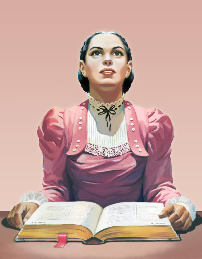

"Throughout all the time the words that Christ spoke from the mount of Beatitudes will retain their power.Every sentence is a jewel from the treasure house of truth. The principles enunciated in this disourse are for all ages and for classes of men.With divine energy, Christ expressed His faith and hope as He pointed out class after class as blessed because of having formed righteous characters. Living the life of the Life-giver, through faith in Him, everyone can reach the standard held up in His words. "
ELLEN G WHITE
Mount Of Blessing
Ellen Gould White (née Ellen Gould Harmon; November 26, 1827 – July 16, 1915) was an author and an American Christian pioneer. Along with other Sabbatarian Adventist leaders such as Joseph Bates and her husband James White, she was instrumental within a small group of early Adventists who formed what became known as the Seventh-day Adventist Church. The Smithsonian magazine named Ellen G. White among the "100 Most Significant Americans of All Time.
Read the Full Profile
"White was seen as a powerful and sought after preacher. While she has been perceived as having a strict and serious personality, perhaps due to her lifestyle standards, numerous sources describe her as a friendly person."
From 1844 to 1863 White allegedly experienced between 100 and 200 visions, typically in public places and meeting halls. She experienced her first vision soon after the Millerite Great Disappointment of 1844. She said she had one that led to the writing of The Great Controversy at an Ohio funeral service held on a Sunday afternoon in March 1858, in the Lovett's Grove (now Bowling Green) public school, an alleged vision of the ages-long conflict between Christ and His angels and Satan and his angels was given to Mrs. White.
Read More...
Some of her most well known books are:
According to one evangelical author, "No Christian leader or theologian has exerted as great an influence on a particular denomination as Ellen White has on Adventism." Additional authors have stated "Ellen G. White has undoubtedly been the most influential Seventh-day Adventist in the history of the church."
Read her full legacy...